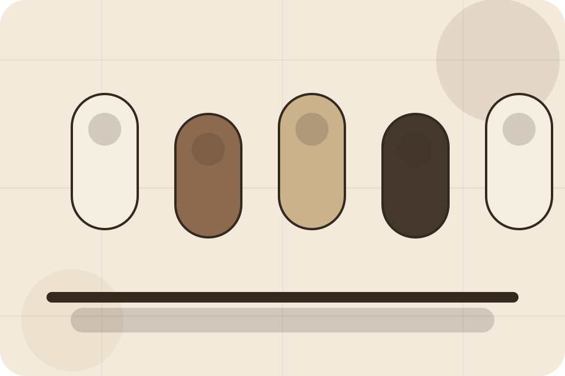
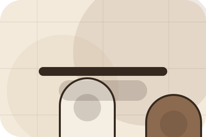
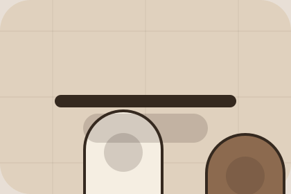

FAQ / 01
FAQ by Skin
FAQ shaped for beauty, cosmetics & aesthetic products decisions.
FAQ opens as a clear beauty decision hub: what Skin offers, who it helps, why it matters, and which route to take first.
The first screen combines positioning, proof, primary action, and fast internal navigation, so people can act immediately or compare the rest of the faq route with context.
Browse quicklyCompare clearlyAsk availability
Muted product education hero
Build a routine
Select the closest route and Skin keeps the next step, proof, and follow-up expectation aligned with self-care confidence.

FAQ / 02
Questions before you build a routine
Types handles buying doubts directly so visitors can understand timing, fit, limits, and the safest next step.
Answers are short by design: enough to remove hesitation, not so much that the page turns into documentation before the visitor can act.
Explore FAQQuestion
Types gives the page a specific angle instead of repeating the navigation label.
Answer
The ingredient education cards show what to compare, what to avoid, and what matters most for beauty, cosmetics & aesthetic products visitors.
Next Step
The final cue points to a useful internal route so the section keeps the journey moving.
FAQ / 03
Questions before you build a routine
Allergies handles buying doubts directly so visitors can understand timing, fit, limits, and the safest next step.
Answers are short by design: enough to remove hesitation, not so much that the page turns into documentation before the visitor can act.
Explore FAQ- 01
Question
Allergies gives the page a specific angle instead of repeating the navigation label.
- 02
Answer
The ingredient education cards show what to compare, what to avoid, and what matters most for beauty, cosmetics & aesthetic products visitors.
- 03
Next Step
The final cue points to a useful internal route so the section keeps the journey moving.
FAQ / 04
Questions before you build a routine
Returns handles buying doubts directly so visitors can understand timing, fit, limits, and the safest next step.
Answers are short by design: enough to remove hesitation, not so much that the page turns into documentation before the visitor can act.
Explore FAQSkin structures returns around question, answer, and a clear next route so visitors can compare the block quickly before they build a routine.
Build RoutineFAQ / 06
Questions before you build a routine
Pregnancy handles buying doubts directly so visitors can understand timing, fit, limits, and the safest next step.
Answers are short by design: enough to remove hesitation, not so much that the page turns into documentation before the visitor can act.
Explore FAQQuestion
Pregnancy gives the page a specific angle instead of repeating the navigation label.
Answer
The ingredient education cards show what to compare, what to avoid, and what matters most for beauty, cosmetics & aesthetic products visitors.

Next Step
The final cue points to a useful internal route so the section keeps the journey moving.
FAQ / 07
Questions before you build a routine
Shipping handles buying doubts directly so visitors can understand timing, fit, limits, and the safest next step.
Answers are short by design: enough to remove hesitation, not so much that the page turns into documentation before the visitor can act.
Explore FAQShipping gives the page a specific angle instead of repeating the navigation label.
The ingredient education cards show what to compare, what to avoid, and what matters most for beauty, cosmetics & aesthetic products visitors.
The final cue points to a useful internal route so the section keeps the journey moving.
FAQ / 08
Questions before you build a routine
Orders handles buying doubts directly so visitors can understand timing, fit, limits, and the safest next step.
Answers are short by design: enough to remove hesitation, not so much that the page turns into documentation before the visitor can act.
Explore FAQ- 01
Question
Orders gives the page a specific angle instead of repeating the navigation label.
- 02
Answer
The ingredient education cards show what to compare, what to avoid, and what matters most for beauty, cosmetics & aesthetic products visitors.
- 03
Next Step
The final cue points to a useful internal route so the section keeps the journey moving.
FAQ / 09
Compare service routes
Support explains the practical scope, best-fit situations, and expected outcome so beauty visitors can compare options without decoding jargon.
The section keeps the offer concrete: what is included, who it is best for, what decision it supports, and which linked route gives the deeper detail.
Open ContactSkin structures support around best fit, what changes, and a clear next route so visitors can compare the block quickly before they build a routine.
Build RoutineFAQ / 10
Build Routine
Skin closes the faq route with a clear action, a quick reminder of the value, and a low-friction way to build a routine.
Visitors who are ready can use the primary action. Visitors who are still comparing can scan the section links, proof, and support routes before they build a routine.
Build RoutineThe final block keeps the choice simple: act now, compare one more proof route, or send enough detail for a focused response.
Build Routineself-care confidence
Build Routine
A routine site with restrained product education, ingredient notes, tactile cards, and consultation routes. FAQ ends with a direct path to build a routine, plus enough context for visitors who still need to compare.

Build RoutineImportant notes before you act
Ingredient suitability varies by person; patch testing and professional advice may be needed for sensitive users.